EDIBLE FLOWERS
Edible flowers have become an increasingly trendy food over the past few years, and they can be creatively used in a variety of ways. We’ve provided an edible flowers list below so you can find the right ones to incorporate into your menu. Many types of flowers can't be eaten, so it's best to do further research on any specific ones you may have in mind.
Use these photo links to learn more about the different types of edible flowers!:
source: WebstaurantStore blog
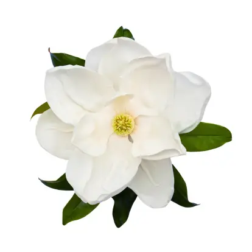
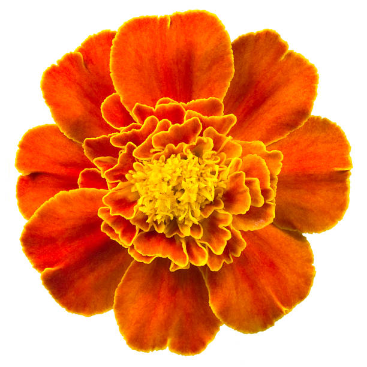Marigold 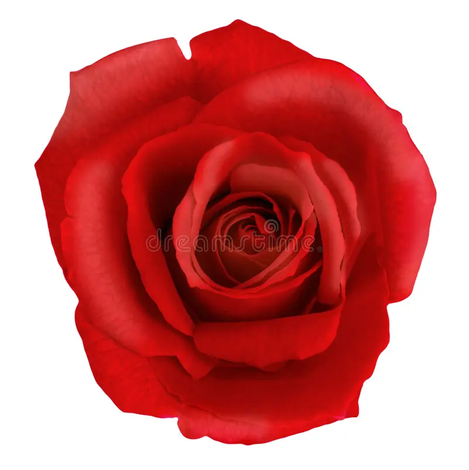Rose 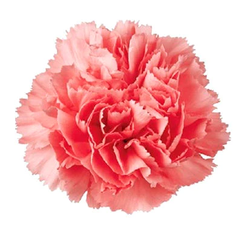Carnation
HERBAL TEA FLOWERS
Floral teas feature dried flowers like jasmine, rose, lavender, and chamomile in soothing, aromatic blends that are full of flavor. For centuries, flower blossoms have been blended with tea and other herbs to create tasty and medicinal brews. Whether you’re dreaming of spring flowers, looking for an iced tea to enjoy in the summer heat, or simply interested in teas with a flowery note, a floral tea is sure to hit the spot!
Use these photo links to learn more about the different types of herbal tea dried flowers used for tea!:
source: artful tea
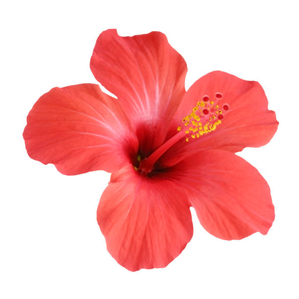Hibiscus Chamomile 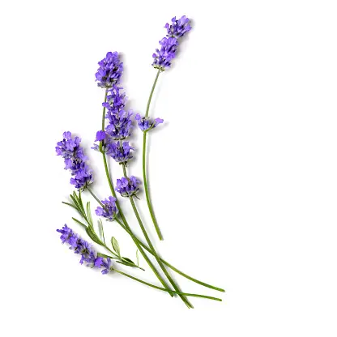Lavender
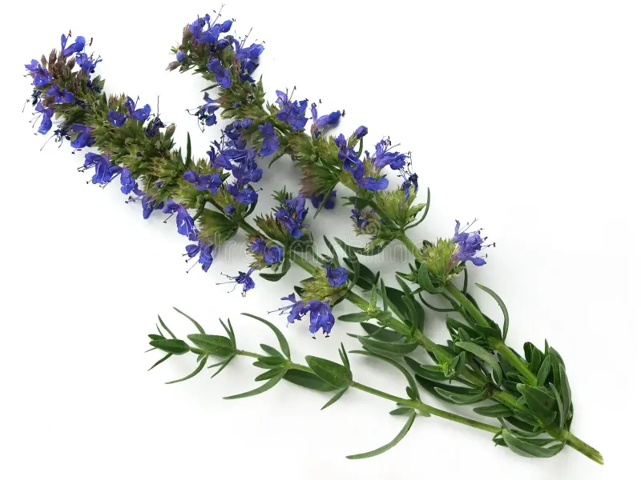Hyssop 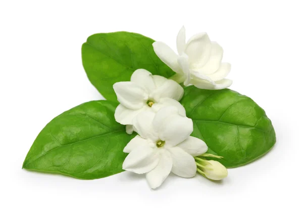Jasmine
 Chrysanthemum
Chrysanthemum
AROMATIC FLOWERS
The sheer visual beauty of a flower can be enough to attract our attention, but it is a flower’s unique and charming smell that truly seduces us, and for good reason. Of the five senses, smell has been scientifically proven to be the most powerful, and the one most directly connected to our memories: Familiar scents can instantly conjure remembrances, along with the exact emotions attached to them. Even scents that we’ve never encountered can quickly and silently affect our feelings.
Use these photo links to learn more about the different types of aromatic flowers!:
source: petal talk
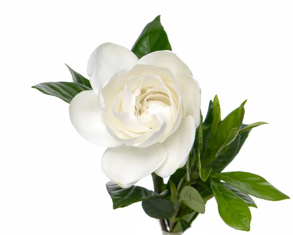Gardenia 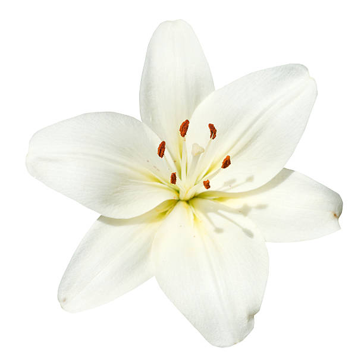Lily 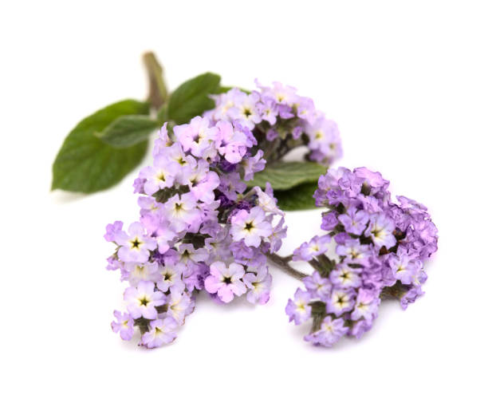Heliotrope
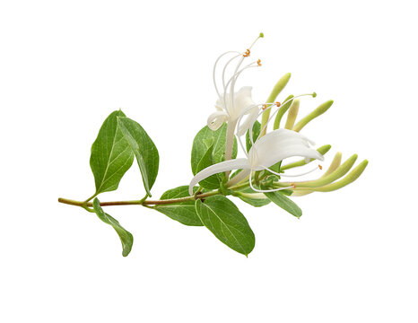Honeysuckle
 Hyacinth
Hyacinth
 Lilac
Lilac
POISONOUS FLOWERS
Many common and beloved garden flowers are poisonous. It seems that most folks are unaware of the dangers that exist in the common flower garden. Learn which popular flowers are poisonous to humans and pets.
Use these photo links to learn more about the different types of poisonous flowers and to be aware of the flowers' effects!:
source: Flower Patch Farmhouse
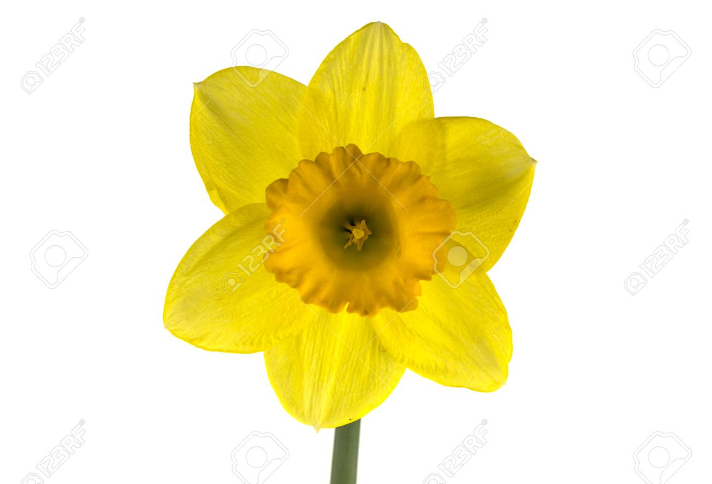Daffodil
 Angel's Trumpet
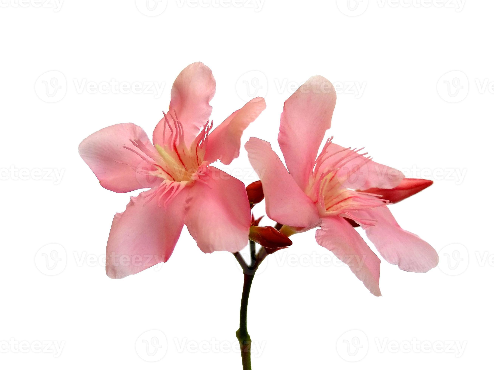Oleander
Angel's Trumpet
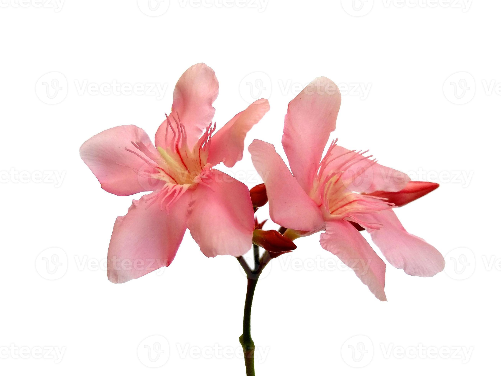Oleander
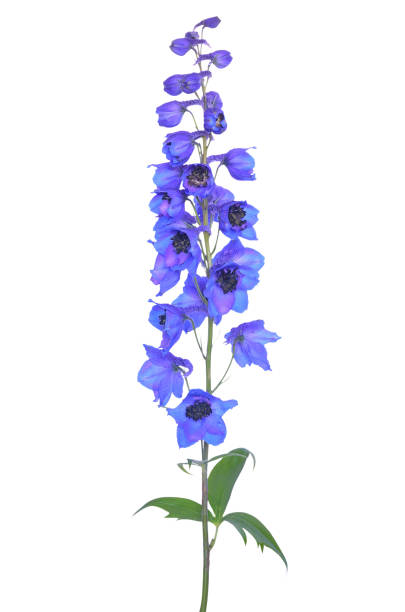Delphinium
 Hyacinth
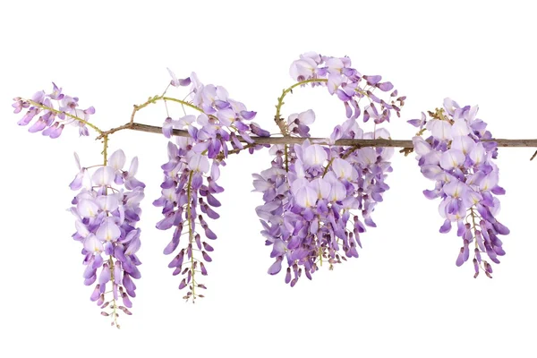Wisteria
Hyacinth
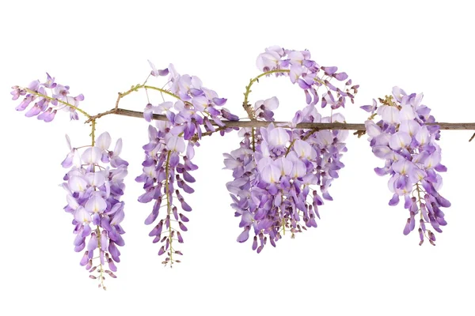Wisteria